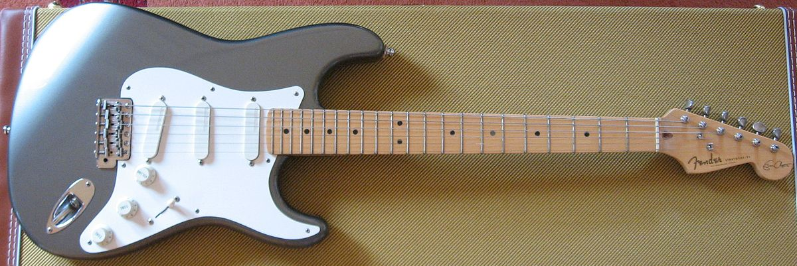

An electric guitar is a guitar that requires external amplification in order to be heard at typical performance volumes, unlike a standard acoustic guitar. It uses one or more pickups to convert the vibration of its strings into electrical signals, which ultimately are reproduced as sound by loudspeakers. The sound is sometimes shaped or electronically altered to achieve different timbres or tonal qualities from that of an acoustic guitar via amplifier settings or knobs on the guitar. Often, this is done through the use of effects such as reverb, distortion and "overdrive"; the latter is considered to be a key element of electric blues guitar music and jazz and rock guitar playing. Designs also exist combining attributes of the electric and acoustic guitars: the semi-acoustic and acoustic-electric guitars.
Invented in 1932, the electric guitar was adopted by jazz guitar players, who wanted to play single-note guitar solos in large big band ensembles. Early proponents of the electric guitar on record include Les Paul, Eddie Durham, George Barnes, Lonnie Johnson, Sister Rosetta Tharpe, T-Bone Walker, and Charlie Christian. During the 1950s and 1960s, the electric guitar became the most important instrument in popular music.[1] It has evolved into an instrument that is capable of a multitude of sounds and styles in genres ranging from pop and rock to folk to country music, blues and jazz. It served as a major component in the development of electric blues, rock and roll, rock music, heavy metal music and many other genres of music.
Electric guitar design and construction varies greatly in the shape of the body and the configuration of the neck, bridge, and pickups. Guitars may have a fixed bridge or a spring-loaded hinged bridge, which lets players "bend" the pitch of notes or chords up or down, or perform vibrato effects. The sound of an electric guitar can be modified by new playing techniques such as string bending, tapping, and hammering-on, using audio feedback, or slide guitar playing.